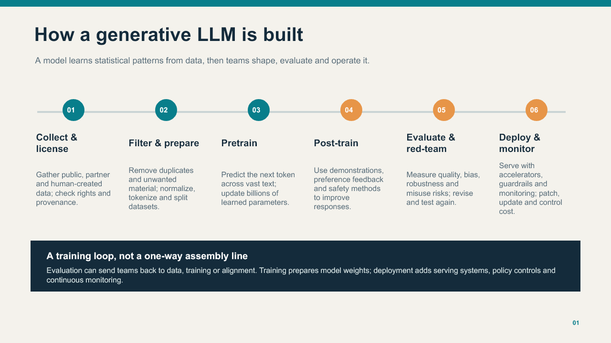
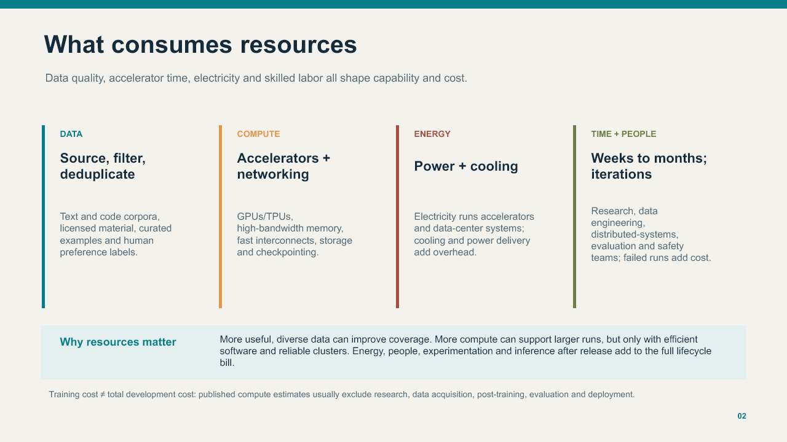
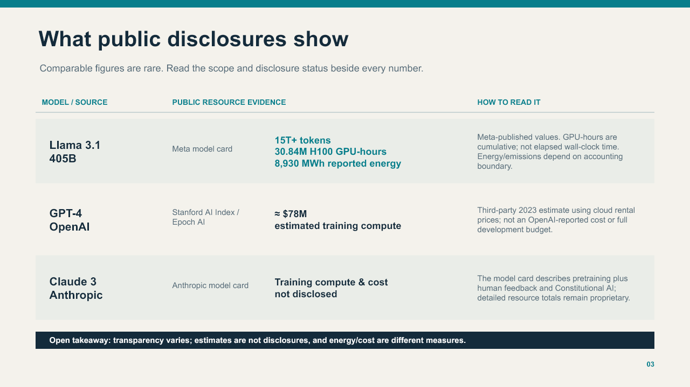

How Generative LLMs Are Trained
A visual guide to the training pipeline, the infrastructure behind it, and what public disclosures reveal about model resources and costs.
Project overview
Challenge
Training a large language model involves many stages and resource categories. Public information is incomplete and often reports different measures, which makes headline cost numbers easy to misread.
Approach
I organized the subject as a six-step training and deployment process, then mapped the resource categories and compared examples with their disclosure status shown alongside the figures.
Skills demonstrated
Research synthesis, AI/ML systems literacy, data and infrastructure reasoning, evidence qualification, and visual communication for a broad audience.
- LLM training lifecycle
- GPU and energy metrics
- Source evaluation
- Information design
- Accessibility-first layout
Training lifecycle
Data collection and preparation feed pretraining; post-training shapes assistant behavior; evaluation and red-teaming guide iteration; deployment adds serving, safeguards and monitoring.

What uses resources?
Data quality, accelerator time, networking, electricity, cooling, skilled labor and repeated experiments all contribute to model development and operating cost.

Examples and disclosure limits
The figures are labeled by source and scope. They should not be treated as equivalent accounting measures.

Sources
- IBM Technology · How Large Language Models Work
- Eye on Tech · What is ChatGPT? (In About A Minute)
- Stephen Wolfram · What Is ChatGPT Doing … and Why Does It Work?
- OpenAI · How ChatGPT and our foundation models are developed
- Meta · Llama 3.1 405B model card
- Stanford HAI · AI Index Report 2025, Chapter 1
- Anthropic · Claude 3 Model Card